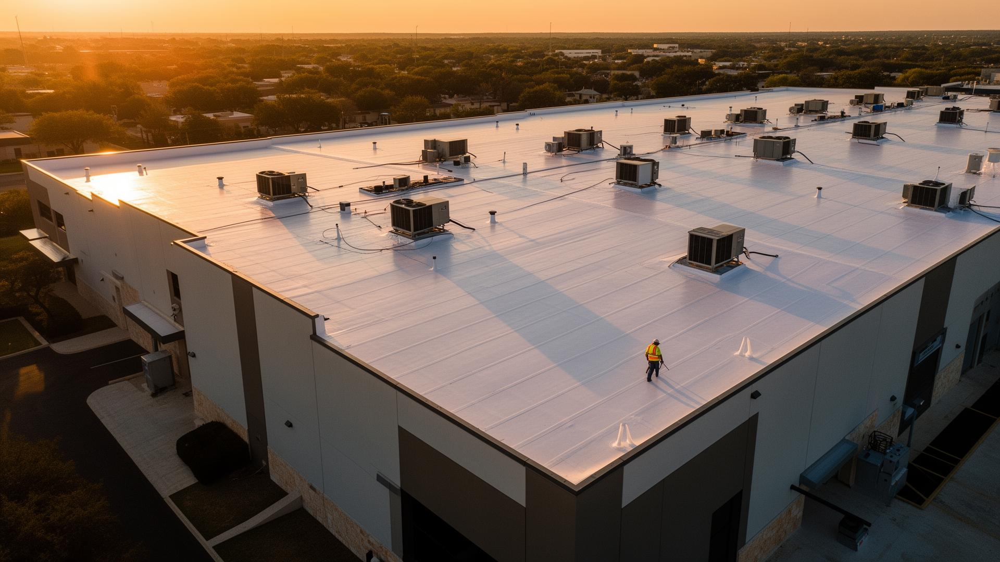

Enroll online or book a consultation.
Sit down with our team, or enroll online right now and lock in 10% off your first year.
830-228-6123 24/7 Storm Response · Licensed & Insured TX
Reduce emergency repairs, extend roof life, improve budgeting, and receive priority storm response. Drone-documented at every visit.
A neglected commercial roof fails on a storm's schedule, not yours. Members get scheduled inspections, documentation that satisfies warranty and insurance, and front-of-line response when severe weather hits.
Catch failing penetrations, ponding, and seam separation before they become weekend leak calls.
Documented preventative maintenance routinely adds 5 to 10 years to a commercial roof's service life.
Capital planning reports tell you exactly when each roof needs replacement, not when it fails.
When a storm hits, members are dispatched first. Non-members wait in line.
All plans include drone-documented inspections, photo records, and condition reports built for warranty and capital planning. Published starting rates below.
Starting-at rates as published by Texas Roof Guardians. Online enrollment saves 10% on year one.
Sit down with our team, or enroll online right now and lock in 10% off your first year.
830-228-6123 24/7 Storm Response · Licensed & Insured TX